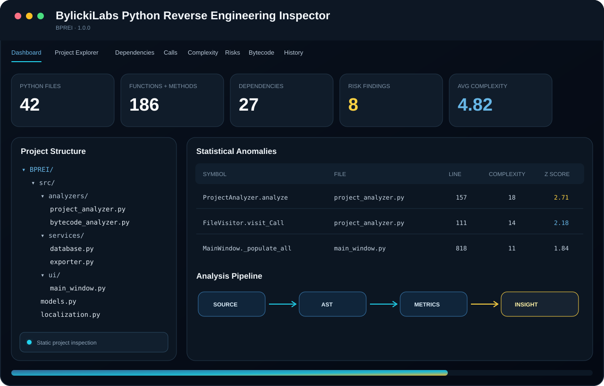
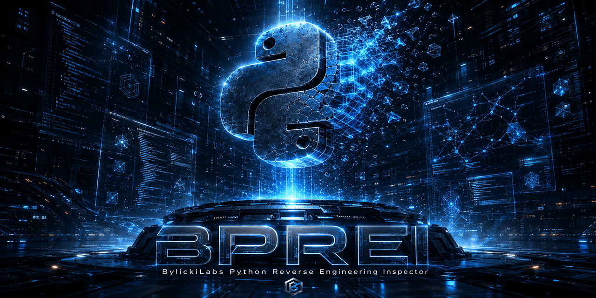

Project Explorer
Projektstruktur und Symbole in einer Ansicht
FilesClassesSymbols
Zweisprachige Desktop Anwendung zur statischen strukturellen Untersuchung vollständiger Python Projekte.
Das Downloadpaket enthält den aktuellen Python Quellcode sowie die Windows Start und Build Skripte.

BylickiLabs_Python_Reverse_Engineering_Inspector/
├── .github
├── website
├── src
├── main.py
├── requirements.txt
├── start.bat
├── build.bat
├── README.md
├── LICENSE
└── src/
├── config.py
├── localization.py
├── models.py
├── analyzers/
│ ├── project_analyzer.py
│ └── bytecode_analyzer.py
├── services/
│ ├── database.py
│ └── exporter.py
└── ui/
└── main_window.py